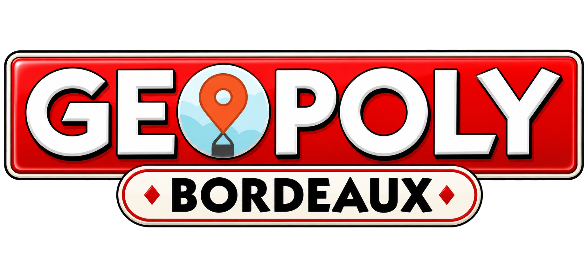

<div id="geopoly-app" style="background-color:light-dark(#f7f4ed,#151515);color:light-dark(#1e1e1e,#f3f3f3);padding:24px;min-height:100%;border-radius:0;font-family:Arial,Helvetica,sans-serif;">
  <style>
    #geopoly-app *{box-sizing:border-box}
    #geopoly-app .wrap{max-width:760px;margin:0 auto}
    #geopoly-app .hero{background:light-dark(#ffffff,#222);border:1px solid light-dark(#ded8ca,#333);border-radius:18px;padding:22px;margin-bottom:18px}
    #geopoly-app .eyebrow{font-size:13px;font-weight:700;letter-spacing:.08em;text-transform:uppercase;opacity:.68}
    #geopoly-app h2{margin:6px 0 10px;font-size:30px;line-height:1.05}
    #geopoly-app .scorebar{display:flex;gap:12px;flex-wrap:wrap;margin-top:16px}
    #geopoly-app .pill{background:light-dark(#f0ede5,#2d2d2d);border-radius:999px;padding:10px 14px;font-weight:700}
    #geopoly-app .card{background:light-dark(#ffffff,#222);border:1px solid light-dark(#ded8ca,#333);border-radius:18px;padding:22px}
    #geopoly-app .place{font-size:13px;font-weight:700;text-transform:uppercase;letter-spacing:.06em;opacity:.65}
    #geopoly-app .question{font-size:22px;font-weight:700;line-height:1.25;margin:10px 0 18px}
    #geopoly-app .question-logo{display:flex;justify-content:center;align-items:center;margin:0 0 18px}
    #geopoly-app .question-logo img{display:block;max-width:240px;width:70%;height:auto;object-fit:contain}
    #geopoly-app .answers{display:grid;gap:10px}
    #geopoly-app button{font:inherit;min-height:48px;border-radius:12px;border:1px solid light-dark(#cfc7b8,#444);padding:12px 14px;cursor:pointer;background:light-dark(#faf8f3,#292929);color:inherit;text-align:left}
    #geopoly-app button:hover{background:light-dark(#f1eee7,#333)}
    #geopoly-app button:focus{outline:3px solid light-dark(#6f6f6f,#b8b8b8);outline-offset:2px}
    #geopoly-app .actions{display:flex;gap:10px;flex-wrap:wrap;margin-top:16px}
    #geopoly-app .primary{background:light-dark(#202020,#f2f2f2);color:light-dark(#fff,#111);border-color:transparent;text-align:center;font-weight:700;flex:1}
    #geopoly-app .skip{text-align:center;flex:1}
    #geopoly-app .feedback{margin-top:16px;padding:14px;border-radius:12px;background:light-dark(#f2efe8,#2b2b2b);font-weight:700;display:none}
    #geopoly-app .progress{height:8px;background:light-dark(#e7e0d3,#303030);border-radius:999px;overflow:hidden;margin:14px 0 0}
    #geopoly-app .progress>div{height:100%;background:light-dark(#333,#ddd);width:0%;transition:width .25s ease}
    #geopoly-app .final{display:none}
    #geopoly-app .rank{font-size:28px;font-weight:800;margin:12px 0}
    #geopoly-app .summary{display:grid;gap:8px;margin-top:16px}
    #geopoly-app .row{display:flex;justify-content:space-between;gap:16px;border-bottom:1px solid light-dark(#e5dfd5,#333);padding:10px 0}
    #geopoly-app .small{font-size:14px;opacity:.72}

    @media(max-width:480px){
      #geopoly-app{padding:14px}
      #geopoly-app h2{font-size:25px}
      #geopoly-app .question{font-size:20px}
      #geopoly-app .actions{flex-direction:column}
    }
  </style>

  <div class="wrap">

    <section class="hero">
      <div class="eyebrow">GEOPOLY BORDEAUX</div>

      <h2>Questions bonus</h2>

      <div>
        Chaque question est facultative.
        Une bonne réponse rapporte des points.
        Une mauvaise réponse ne bloque jamais le parcours.
      </div>

      <div class="scorebar">
        <div class="pill">
          ⭐ Score : <span id="score">0</span>
        </div>

        <div class="pill">
          Question <span id="step">1</span>/<span id="totalQuestions">8</span>
      </div>
      </div>

      <div class="progress">
        <div id="progress"></div>
      </div>
    </section>


    <section class="card" id="quizCard">

      <div class="place" id="place"></div>

      <div class="question" id="question"></div>
      <div class="question-logo">
      
      </div>

      <div class="answers" id="answers"></div>

      <div class="feedback" id="feedback" aria-live="polite"></div>

      <div class="actions">

        <button type="button" class="skip" id="skipBtn">
          Passer cette question
        </button>

        <button type="button" class="primary" id="nextBtn" disabled>
          Continuer
        </button>

      </div>

    </section>


    <section class="card final" id="finalCard">

      <div class="eyebrow">
        Résultat final
      </div>

      <div class="rank" id="rank"></div>

      <div id="finalScore"></div>

      <div class="summary" id="summary"></div>

      <div class="actions">

        <button type="button" class="primary" id="restartBtn">
          Recommencer
        </button>

      </div>

    </section>

  </div>


<script>

(()=>{

const root = document.getElementById('geopoly-app');

if(root.dataset.init) return;

root.dataset.init = '1';


/* =====================================================
   QUESTIONS
===================================================== */

const questions = [

{
place:'Grosse Cloche',
q:'Combien de cadrans possède la Grosse Cloche ?',
answers:['1','2','4'],
correct:1,
points:2
},

{
place:'Grand Théâtre',
q:'Combien de colonnes composent la façade principale ?',
answers:['10','12','14'],
correct:1,
points:3
},

{
place:'Porte Cailhau',
q:'À quel siècle la Porte Cailhau a-t-elle été construite ?',
answers:['XIIIe','XVe','XVIIe'],
correct:1,
points:3
},

{
place:'Place de la Bourse',
q:'Quel élément emblématique se trouve juste en face de la place ?',
answers:[
'Le miroir d’eau',
'Le jardin public',
'La flèche Saint-Michel'
],
correct:0,
points:2
},

{
place:'Cité du Vin',
q:'À quoi la forme du bâtiment fait-elle notamment référence ?',
answers:[
'Une vague et le vin en mouvement',
'Une forteresse médiévale',
'Une cathédrale gothique'
],
correct:0,
points:4
}

];


/* =====================================================
   SAUVEGARDE
===================================================== */

const STORAGE_KEY = 'geopoly-bordeaux-progress-v1';


let index = 0;
let score = 0;
let answered = false;

const results = [];


/* Sauvegarde automatiquement */

function saveProgress(){

  try{

    localStorage.setItem(
      STORAGE_KEY,
      JSON.stringify({
        index:index,
        score:score,
        results:results
      })
    );

  }catch(e){

    console.log("Sauvegarde impossible");

  }

}


/* Recharge la partie */

function loadProgress(){

  try{

    const saved =
      JSON.parse(
        localStorage.getItem(STORAGE_KEY) || 'null'
      );

    if(!saved) return;


    if(
      Number.isInteger(saved.index) &&
      saved.index >= 0 &&
      saved.index <= questions.length
    ){
      index = saved.index;
    }


    if(
      Number.isFinite(saved.score) &&
      saved.score >= 0
    ){
      score = saved.score;
    }


    if(Array.isArray(saved.results)){

      results.length = 0;

      saved.results
      .slice(0,questions.length)
      .forEach(result=>{
        results.push(result);
      });

    }

  }catch(e){

    console.log("Chargement impossible");

  }

}


/* Efface la partie */

function clearProgress(){

  try{

    localStorage.removeItem(STORAGE_KEY);

  }catch(e){}

}


/* =====================================================
   ELEMENTS
===================================================== */

const scoreEl =
root.querySelector('#score');

const stepEl =
root.querySelector('#step');

const progressEl =
root.querySelector('#progress');

const placeEl =
root.querySelector('#place');

const qEl =
root.querySelector('#question');

const answersEl =
root.querySelector('#answers');

const feedbackEl =
root.querySelector('#feedback');

const skipBtn =
root.querySelector('#skipBtn');

const nextBtn =
root.querySelector('#nextBtn');

const quizCard =
root.querySelector('#quizCard');

const finalCard =
root.querySelector('#finalCard');


/* =====================================================
   AFFICHAGE QUESTION
===================================================== */

function render(){

const item = questions[index];

answered = false;

nextBtn.disabled = true;

skipBtn.disabled = false;

feedbackEl.style.display = 'none';

feedbackEl.textContent = '';


scoreEl.textContent =
score;


stepEl.textContent =
index + 1;


progressEl.style.width =
((index / questions.length) * 100) + '%';


placeEl.textContent =
item.place +
' · Bonus +' +
item.points +
' points';


qEl.textContent =
item.q;


answersEl.innerHTML = '';


item.answers.forEach((answer,i)=>{

  const button =
  document.createElement('button');

  button.type =
  'button';

  button.textContent =
  answer;

  button.addEventListener(
    'click',
    ()=>choose(i)
  );

  answersEl.appendChild(button);

});

}


/* =====================================================
   REPONSE
===================================================== */

function choose(i){

if(answered) return;

answered = true;

skipBtn.disabled = true;

const item =
questions[index];


const buttons =
[...answersEl.querySelectorAll('button')];


buttons.forEach(button=>{
  button.disabled = true;
});


if(i === item.correct){

  score += item.points;

  feedbackEl.textContent =
  'Bonne réponse ! +' +
  item.points +
  ' points';


  results.push({

    place:item.place,

    status:'Bonne réponse',

    points:item.points

  });

}

else{

  feedbackEl.textContent =
  'Réponse incorrecte. 0 point, mais tu peux continuer.';


  results.push({

    place:item.place,

    status:'Incorrecte',

    points:0

  });

}


feedbackEl.style.display =
'block';


scoreEl.textContent =
score;


nextBtn.disabled =
false;


/* SAUVEGARDE */

saveProgress();

}


/* =====================================================
   PASSER
===================================================== */

skipBtn.addEventListener(
'click',
()=>{

if(answered) return;

answered = true;


results.push({

place:
questions[index].place,

status:
'Passée',

points:
0

});


feedbackEl.textContent =
'Question passée. Aucun point perdu et le parcours continue.';


feedbackEl.style.display =
'block';


answersEl
.querySelectorAll('button')
.forEach(button=>{

button.disabled =
true;

});


skipBtn.disabled =
true;


nextBtn.disabled =
false;


/* SAUVEGARDE */

saveProgress();

});


/* =====================================================
   QUESTION SUIVANTE
===================================================== */

nextBtn.addEventListener(
'click',
()=>{

index++;


/* SAUVEGARDE */

saveProgress();


if(index < questions.length){

render();

}

else{

finish();

}

});


/* =====================================================
   FIN
===================================================== */

function finish(){

quizCard.style.display =
'none';


finalCard.style.display =
'block';


progressEl.style.width =
'100%';


const max =
questions.reduce(

(total,question)=>
total + question.points,

0

);


let rank =
'Explorateur de Bordeaux';


if(score >= 12){

rank =
'Grand Maître GEOPOLY';

}

else if(score >= 9){

rank =
'Expert bordelais';

}

else if(score >= 5){

rank =
'Aventurier bordelais';

}


root
.querySelector('#rank')
.textContent =
rank;


root
.querySelector('#finalScore')
.textContent =
'Score : ' +
score +
' / ' +
max +
' points';


const summary =
root.querySelector('#summary');


summary.innerHTML =
'';


results.forEach(result=>{

const row =
document.createElement('div');

row.className =
'row';


row.innerHTML =

'<span>' +

result.place +

'<div class="small">' +

result.status +

'</div>' +

'</span>' +

'<strong>+' +

result.points +

'</strong>';


summary.appendChild(row);

});


/* SAUVEGARDE */

saveProgress();

}


/* =====================================================
   RECOMMENCER
===================================================== */

root
.querySelector('#restartBtn')
.addEventListener(
'click',
()=>{

index = 0;

score = 0;

results.length = 0;


/* EFFACE LA SAUVEGARDE */

clearProgress();


quizCard.style.display =
'block';


finalCard.style.display =
'none';


render();

});


/* =====================================================
   DEMARRAGE
===================================================== */


/* Recherche une partie sauvegardée */

loadProgress();


/* Si le joueur avait terminé */

if(index >= questions.length){

finish();

}

/* Sinon reprise à la question sauvegardée */

else{

render();

}


})();

</script>

</div>
